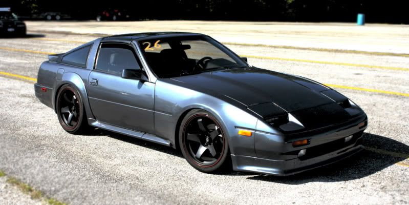

-
now thats sexy, with the kouki front end and kaminari lip, I really want to paint my z 2-tone now!floridaZ wrote: AE > 86 In my humble opinion. Most of that is the paint though, I love the robo-panda scheme the AEs have going.1uz Swapped, lowered, flaked out '86 z31
'72 Datsun 510 4dr, ka24de-T, slammed resto mod
'84 z31 turbo, coils, wheels a.k.a the gfs weekend car
'86 na2t parts for now a.k.a eventually will get running with a/c daily
'83 280zx project backburner a.k.a ls turbo drag car one day
Custom vg30et tube chassis drift exocet project -
Funny thing, MikeG already did this and it looks great. I don't recall anyone flaming him for the look.

Build thread http://z31performance.com/showthread…-Paint-done-eh -
His car is an AE....lolstufferton wrote: Funny thing, MikeG already did this and it looks great. I don't recall anyone flaming him for the look.
- VG30DET (HE341) 86 300ZX - 1982 280ZX Turbo - Headered NA 1986 300ZX 2+2 - 2000 Xterra - -
Fixed that for you.michaelp wrote:
His car is pure sex…lol -
[quote]ExtremeAtheist wrote:It being sexy doesn't change the fact that technically its a 50th AE…lol :nanan?reOriginally posted by michaelp- VG30DET (HE341) 86 300ZX - 1982 280ZX Turbo - Headered NA 1986 300ZX 2+2 - 2000 Xterra - -
how much dose a set of thes flares usualy go for one here when they surface -
theres a set for sale on these forums right now
viewtopic.php?f=9&t=33716
And regardless whether it's an AE or not, his car is exactly how it would look on an 86, or 84-85 with a nose swap.
So as to regards to OP, this is how his car would look -paint job.
Build thread http://z31performance.com/showthread…-Paint-done-eh -
Mike G's car is a good example of how my Z could look
However I only have the flares, no skirts
I want to try make the flares work with the stock kouki skirts
I have contacted the the seller linked above aswell
-
stufferton wrote: theres a set for sale on these forums right now
http://z31performance.com/forum/viewtop … =9&t=33716
And regardless whether it's an AE or not, his car is exactly how it would look on an 86, or 84-85 with a nose swap.
So as to regards to OP, this is how his car would look -paint job.
That is not how they would look on an 86, the ass would be much widerOriginally posted by adamvann3 -
[quote]1sikz wrote:An extra 2" wider than the 84-85.Originally posted by stufferton
Look up mutant-z. He is on here from time to time. He has some CrossFactory rear fenders that would resemble what the AE flares molded into a 86+ rear fender would look like. Super wide rear is the result.
1986 300ZX Turbo…sold
1990 Skyline GT-R…new money pit
2014 Juke Nismo RS 6-speed…daily -
Or just go find pics of racingzx's car, its a kouki with ae flares
"Beer is proof that god wants us to be happy" - Benjamin Franklin -
The "kouki" posted with the flares looks to actually be an AE with a front end swap like Mikes car. -
Except that its a kouki. If you search, you'll find the pics of it's ass end.Greasedmonkey wrote: The "kouki" posted with the flares looks to actually be an AE with a front end swap like Mikes car.Feedback- viewtopic.php?f=18&t=19840

-
The point is that the car has the zenki rear quarter with an AE flare bolted on....regardless of other mods.
The same point applys to my car. (thanks for the compliments!)
I believe the OP is interested in the flare on flare look given by a kouki rear quarter with an AE flare attached. I can't imagine this looking good.."produce first.talk second." -
I still say that the difference in width between Kouki quarter fenders and the Kouki with AE flares is nearly negligible by eye and I would much rather have the integrated look of the wide body Kouki quarter fenders vs the add on flares added to the Kouki fenders to get 1 inch or less additional width. The add ons look after market.
Example, which looks better, a black 86T or an 84AE painted black like the 86T. I'd say the 86 because it looks more like it was originally designed to have the wide quarter fenders, not an afterthought. Just my opinion.
Now AE flares on Zenki quarter fenders? That makes sense.Restore it, Don't crush it. They don't make them like this anymore.
Scott
85 Turbo, original owner, restored
93 NA Babied


Copyright © 2006–. All rights reserved. Privacy Policy